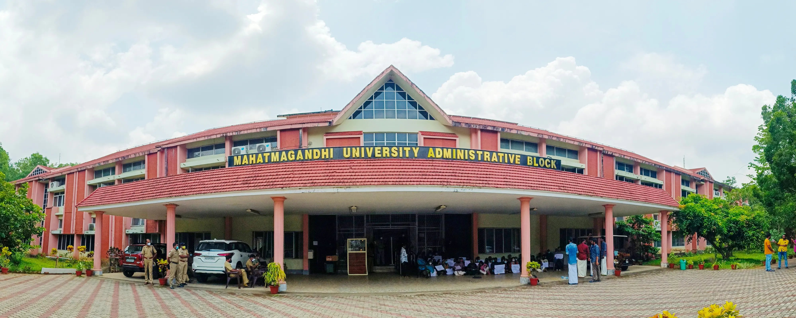

AI/ML Engineer & Data Scientist
MSc Data Science · IEEE Researcher · Patent Co-holder
Building intelligent systems that matter.
Model Accuracy
Restaurants Analysed
Live Projects
I'm a Data Scientist and AI/ML Engineer completing my MSc in Data Science at CHRIST University, Bengaluru. With hands-on production experience at TechZia and Seeroo IT Solutions, I've architected real-time anomaly detection systems for autonomous vehicles, published IEEE research, and co-hold a Government of India Design Patent.
My work spans the full ML lifecycle — from raw EDA and statistical modelling to deploying scalable REST APIs and LLMOps platforms. I believe in reproducible pipelines, clear documentation, and models that work in the real world.
TechZia
Seeroo IT Solutions
CNN transfer learning on 10,000+ images across 90 species. Boosted accuracy from 35% → 91.76% via hyperparameter tuning. Production REST API at 100+ req/sec, <200ms latency.
Accuracy
Species
Latency
DenseNet121 + GRU + Attention model on 8,000+ satellite sequences. 75% accuracy, 58% M-class & 36% X-class rare-event recall. Deployed client-side in React via TensorFlow.js — zero backend.
Accuracy
Sequences
Published
End-to-end EDA, dimension reduction, engineered Profit Margin & Risk Score metrics. Spark & SQL aggregations for trend analysis. Interactive Power BI & Tableau dashboards for stakeholders.
KPIs Built
Processing
Dashboards
End-to-end Restaurant Market Intelligence Platform analyzing 12,000+ Bengaluru restaurants across 90+ locations. Covers EDA, feature engineering, sentiment analysis, customer behavior analysis, and market segmentation to deliver actionable business insights.
Restaurants
Locations
Rating Model
Clustering
End-to-end LLMOps platform automating evaluation, monitoring, and regression detection of Large Language Models. Benchmarks Groq & Gemini providers using a golden dataset, compares prompt versions, detects performance degradation, and generates detailed reports with a full CI/CD pipeline via GitHub Actions.
LLM Provider
LLM Provider
GitHub Actions
Regression Det.
CHRIST (Deemed to be University)
📍 Bengaluru, India

Sree Sankara College, Kalady
📍 MG University, Kerala
A Comparative Analysis of Conditional DCGAN, VAE, and Diffusion Models
Benchmarked 3 generative architectures for improving classifier robustness on imbalanced solar flare datasets. Improved recall on minority classes via synthetic augmentation and representation methodologies.
View on IEEE Xplore ↗Class 23-04 · Co-inventor
Co-inventor of a Government of India–registered Design Patent for a Mobile Cooler device, demonstrating innovation beyond software into physical product design and intellectual property.
View Patent Document ↗Open to full-time roles, internships, and research collaborations in AI/ML, Data Science, and Generative AI.
jestinthomas1507@gmail.com
Phone
+91 89438 87935
jestin-thomas-90a109317
GitHub
Jestin1507
📍 Bengaluru, India
Download ResumeMessage goes directly to my Gmail inbox.